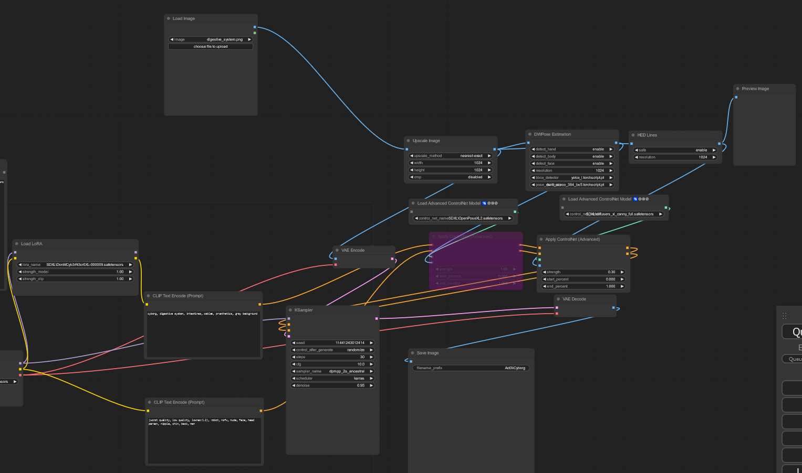
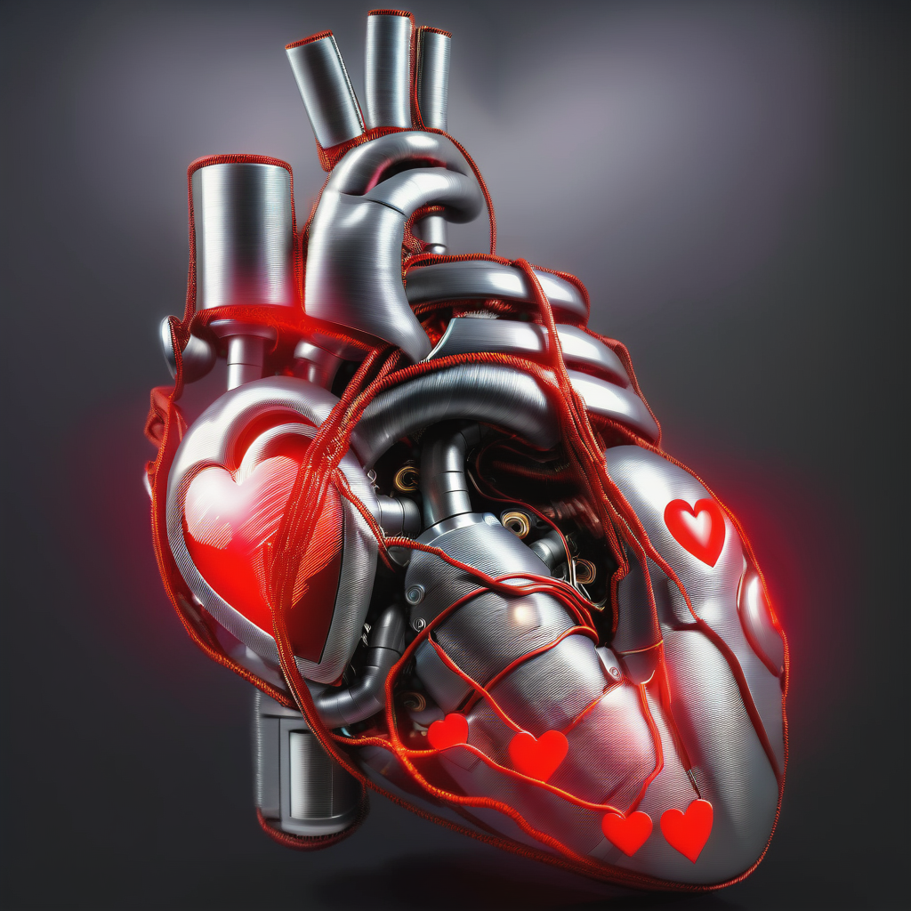
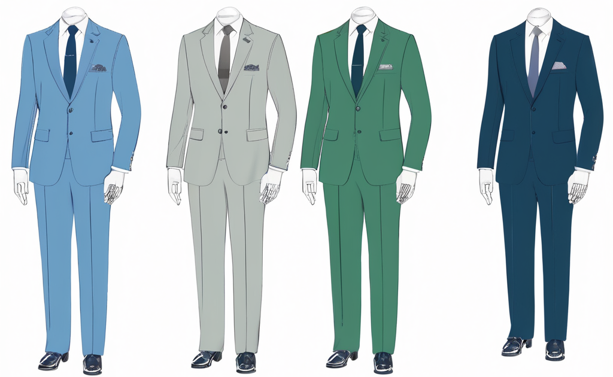

Ballonnenfeest Retrospective
Retrospective 2023-01-16In the past month, I took an unpaid volunteer job with an art collective. They were throwing a large Artificial Intelligence themed performance at Paradiso, Ballonnenfeest, in Amsterdam.
I was an experience! My career has long been spent making ML/AI systems for my employers, rarely have I been granted the opportunity to use these systems myself. So I jumped at the chance to switch sides for a while, to AI consumer rather than producer. I also seized the opportunity to make Art for other people, as I've never done that before.
I've been playing with AI art for the last 2 years, since the time of Disco Diffusion with it's abstract impressionist outputs. I put together a lot of things over the last two years, mainly in Stable Diffusion with the Automatic1111 UI. However, I've never made art for a live performance and in collaboration with other artists.
With this project I wanted to go further and really see what the current open-source state of the art is capable of. Since my last experience, SDXL models had come online with double the resolution and a new workflow. On top of that, ComfyUI had started to become the User Interface of choice for complex workflows. The project demanded even more, since the performance would be live, pictures would be were insufficient, we'd have to generate videos that would be projected on the stage during the performance. At the beginning of December, I knew nothing about how this worked.
I love animation, I have my entire life. I'm still frequently watching animated series (see Pantheon and Sousou no Frieren, you won't regret it) as they are able to push boundaries other media simply cannot get away with, despite the vfx revolution. That said, the technical know-how necessary to generate animation initially felt beyond me. I lacked a vocabulary necessary to describe many of the things I wanted to do. It really felt overwhelming. However, as a cartoon dog once taught me, "Sucking at something is the first step toward being sort of good at something" and you don't get anywhere feeling like something is impossible. You have to try, fail, get back up again and keep trying until things start to work. Plus, the one thing AI excels at is ease of iteration.
There were several hurdles to overcome to get a proper output. The first hurdle was ComfyUI, Stability AI's new UI. Compared to the Gradio-based Automatic1111, it felt like an entirely different beast. ComfyUI has a chaotic visual appearance which can scare a lot of newcomers. It did me. It's vaguely reminiscent of a 1980s synthesizer with it's wild cables being connected all over the place. The proper name for this type of UI is a "node based interface". It's actually used in a lot of other places besides ComfyUI, most notably in the 3D modelling tool, Blender, as the mechanism for designing material shaders. While frightening initially, after a few hours of exploration it began to make sense. Specifically, the fear disappears the moment you realize this type of node-based UI is simply facilitating argument chaining of command line tools. It's just doing it in an aesthetically pretty way, rather than one big bash script.
|  |
|---|
| ComfyUI: Your 1980s Synthesizer Fantasy |
{kind=link}
My guess is we'll see this type of UI in a lot of other places in the future also. It is a logical consequence of using encapsulated open source tools. Adding a node to the UI is only a matter of taking whatever command line tool you have an writing a JSON specifying the arguments and output. This immediately allows it to be used in complex workflows. For example, ffmpeg is used frequently in animation workflows, for combining individual images into output video or gifs. It can also be used to convert input video into individual frames and those frames can then be used to condition the image/video generation. All of this presented to the UI as a series of video helper nodes with video as either output or input.
The second hurdle was figuring out optimal workflows for image/video generation. ComfyUI required substantially greater amount of knowledge of what was going on under the hood of the various parts of the generative process. This was a useful education, because it forced me into a deeper knowledge of the underlying generative models and their various components. The documentation was pretty sparse on many topics, but a combination of reddit, youtube and civitai helped put all the pieces together. The amount of community sharing of outputs, models and workflows is sublime. The entire community seems to be attempting to improve the collective standard.
A lot of experimentation was required to figure which combination of models and parameters generated the results I was after. Further testing was required to ensure that those conclusions were not subject to random variability that would corrupt the final output. This process took up the most amount of time. Doing it required stable ideas from the other artists, which were anything but. Over time, even without stable ideas from the artists, workflows began to materialize that could be adapted to whatever eventually came out. Thus, engineering took over some of the artistic process.
The third hurdle was accurate representation of form. It may come as no surprise to anyone who has done any image generation, but the majority of models are representations of the dominant culture. This means that when you put in the word "man" into an image generation model, you are highly likely to end up getting a good looking man in his late 20s or early 30s. This is even more the case for fine-tuned models, which generally cherry-pick "good" images to use as a base. All of this is the result of using large datasets of images from the internet, the model is simply replicating the frequency of what it has seen. If you want something outside of that dominant representation, you're going to have to work for it.
This is really where "prompt engineering" becomes a practical skill. Specifically, if you want something that isn't over represented in the dominant culture, you will have to be able to analyse a prompt for the terms that may carry with them visual cues, and carefully tweak the prompt until you get the representation you desire. This is not always obvious, no individual term in a prompt carries only it's own information, the broader context in which it exists will always be present, as the model was exposed to this context during training.
|  |
|---|
| Cybernetic "Heart": Concepts bleeding through |
{kind=link}
Take the word "heart", for example. As a visual noun, it has generally two meanings, one is the physical heart which pumps blood and the other is the symbol for a heart that is used in playing cards. An image model, if given the word without any further context, will generally generate one of these definitions. However, over time, you'll notice you start getting the properties of both definitions in the image. A cartoon heart with tubes arising from it or a physical heart where the soft tissue makes the iconic shape. Without additional context provided by the prompt the model will simply generate something that is consistent with the word in all its forms. However, providing context does not entirely eliminate this ambiguity.
|  |
|---|
| A Suit of Suits: Disambiguation Needed |
{kind=link}
As another example, take the word "suit". As a noun, it generally has two meanings, one is the garment, the other is in playing cards. An image model, if given the word without any further context will rely on the bulk of its data to determine which representation to show. Thus, provided alone, the word "suit" will generally generate a man wearing a suit. This is also consistent with a further definition of "suit" as being an executive to wears one. This man will be in this late 20s and early 30s, like the majority of images in the dominant culture. However, if you generate enough images you may notice an interesting phenomena, the term starts to generate four people in suits, often of different colours. Which means that the other definition, the one from playing cards, is not being entirely lost.
Overall, the visual context of the terms need to be carefully constructed. Awareness is needed as to which terms carry what context, and generally this cannot be resolved with anything other than a good dictionary, several image searches and iteration. Sometimes the image models will surprise you with what they produce but most of the time, you'll replicate the dominant culture.
| 36 Goddesses Morph |
The fourth and final hurdle was animations themselves. We were already well equipped with good images to begin the process, but how to bring life to them. At the beginning of this process there was really only two mechanisms for doing animation in Stable Diffusion, Deforum and AnimateDiff/HotshotXL. Both relied on traversing the latent image space and, as a result, both generate beautiful morphing psychedelic videos. For my favourite piece from the show, a morph of 36 Goddesses this wasn't a problem. Using HotshotXL and prompt travelling, the ability to morph each figure into every other in a dreamy way was a boon. Only the context parameters were important here, as they determined how stable the morph would be. This allowed me to focus on the design of the prompts rather than on the animation strategy. The result came out fantastic.
For other parts of the show, more consistency was needed. This illustrated the biggest weakness of these models. Travelling through a prompt's latent space generally resulted in a dreamy output, but sometimes we wanted something that kept its shape over time. Conditioning the model with existing images was the solution. We could use a video as input. The frames of a video could be converted to images and then fed sequentially into the model. These images could then be used as latent input for the generation. Thus, rather than starting from a blank image with 100% noise as we normally do, we start with a frame from the video and apply 50% noise. This results in an output that is more consistent with the original form.
| Siri |
Another technique to achieve consistency was to use a Control Net to condition the model. Like the latent input, this also used input video to condition the outcome. However, unlike the latent input, Control Nets are substantially more flexible. They generate an additional structure on the diffusion model that fine-tunes the output based on a structural condition. These structural conditions depends on which Control Net is used, but this can be such things as edge detection with Canny, pose detection with OpenPose, or depth map detection with Midas. Each one of these carries a different aspect of the original image forward to the final input and generally to achieve consistency, a combination of Control Nets was used in most videos. This technique was used for the creation of cybernetic avatars of several of the main actors in the show. Elon Gates, the wrathful creator and Siri, the artificial intelligence that he builds.
As if by divine intervention, several new models were released into the wild during the second week of the project. Both were helpful in generating consistent animations, IPAdapter and Stable Video Diffusion.
| AI Rudolph Stokvis Smiles |
IPAdapter was useful because it allowed me to generate blends between existing images and new prompts, in this way it was possible to generate keyframes for more complex animation that kept the properties of the original image. For example, you want an image of the same person, but you want that person smiling. Those keyframes could then be stitched together with another model, like RIFE (Real-Time Intermediate Flow Estimation) which being trained on video data, could introduce frames that were consistent with the motion you would expect between the keyframes. Like magic, you end up with good transitions. This technique, along with a custom LORA, was used for the animation of the former producer of the art show, Rudolph.
| Cybernetic Organs |
Stable Video Diffusion (SVD) was also released during this period. It was trained for video synthesis and in theory was exactly what I needed. It would take an image and generate a video from that image. Unfortunately, there was no ability to control the model to steer its output to what I wanted beyond the image input. So you would put in an image, wait 2-3 minutes for it to generate a video, and pray to the machine God that it returned a video that had the correct motion in it. Most of the motion it would generate would be simple things like pan, zoom, rotation. Rarely, it would generate motion that was more appropriate to the image itself. This made the entire process hit-and-miss, and mainly miss, as a lot of iterations were required to get the correct outcome. SVD was used for the organ animation video. Roughly 20 images were generated of each organ, lung, heart, intestines and brain, at each of the four stages of transformation into a robot. One of the 20 images would be selected for animation, then 10-20 videos would be made of each. Much prayer was used during these 10-20 videos, as we could stop the moment we got the correct animation style. The correct videos were then put together into the final version.
| Circuit City |
Most of the hurdles were overcome, and the show came and went. I made some wonderful friends, met some interesting people and produced something that I did not think possible only a month earlier. Still having the images and video to show for it, even the things that didn't make it into the show. For anyone interested in AI image or video generation, I highly recommend immersing yourself now. It is currently a wildly developing field, which will likely get even better in 2024. It isn't as difficult as it appears. If you have an interest in animation, or in telling your own stories, it's a great place to start. Plus, who knows you might be able to make something beautiful.
Infinite gratitude and special thanks to Thomas Meijer without whose synchronicity this never would have gotten started. Furthermore, a big thank you to Jonathan Jones for getting me involved and to Jan Modaal, Sophia Maria Kienhuis, Alex Maria Rekko and August Geerling for keeping me engaged. Finally, a big thank you to everyone in the Ruigoord community for allowing me to participate in this project.
Tags: AI Art Stable Diffusion